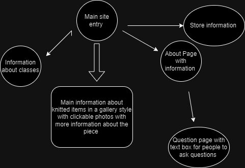
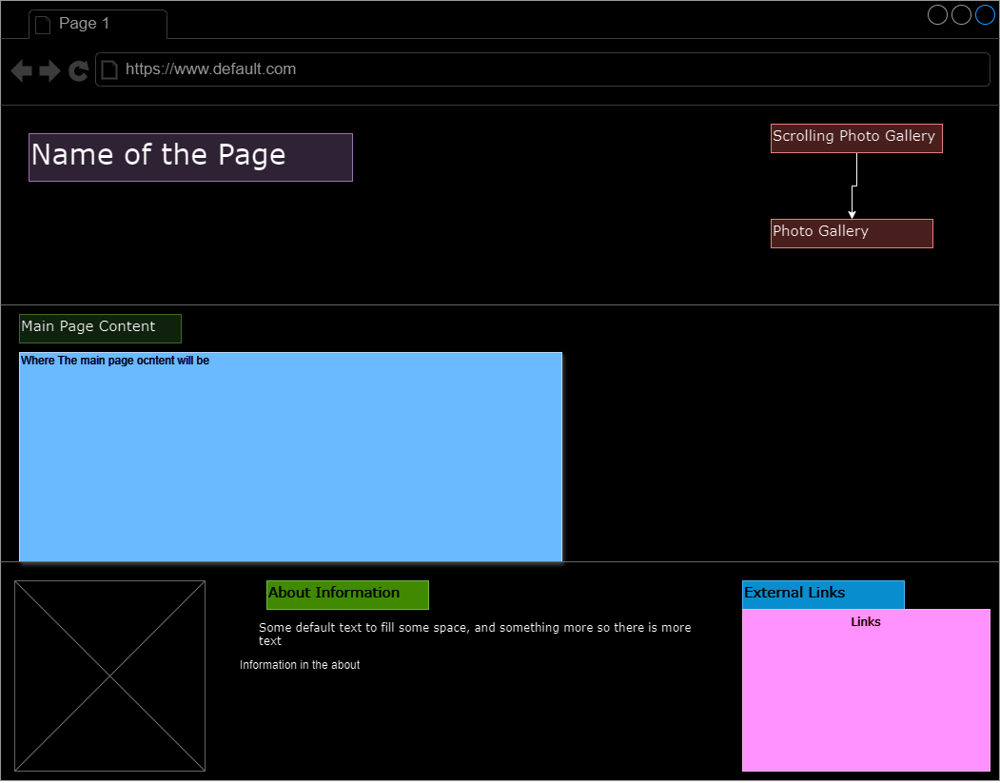

Client Proposal
Overview
The main purpose of this page is to show off yarn and knitted pieces of clothing that are made. Doing this it will connect to classes that are taught on how to make these specfiic pieces of clothing that are knitted. The intended users of this site will be those who are knitters or are interested in learning how to knit. Age range varies as people of all ages and genders knit. The main content will be photos along with text of the pieces of knitted clothing along with when classes are and information about those classes.
Client Info
- Name: Tracey Chance
- Oak City Knits
- cknits@yahoo.com
- Private
Site Map
Site Design
- Page 1
- Home
- This page gives you general information with some pictures and a nav bar to get to the other pages
- This is a page for the customers to get information on the website.
- No, this page will not take any data.
- No buttons or hyperlinks will be on this page
- There isn't much going on this page other than giving a little background and linking to the other pages
- Page 2
- Classes Information
- This page is to give information on classes, their pricing, and when they are occurring along with the schedule
- This page is primarily for customers on the frontend and admin on the backend
- The content will primarily be a list of dates and times along with the prices but may also include a photo gallery of what the class will teach, who is teaching it, and what materials are needed for the class
- Those that would want more information or data can use this site to sign up for emails and also request updates through email
- The data fields will mainly contain text content
- Yes, it will contain buttons and hyperlinks
- The main activities that will be happening is data being processed such as submitting your information and being able to ask questions and request information
- Page 3
- Knitted Works
- This page would give information the website owner essentially working as a portfolio as to who they are and what they know about knitting
- The main audience is users
- The primary content will be text content along with a slideshow gallery of images of knitted works
- There will be no user data entered
- The HTML will need validation
- There will be buttons to change the photos in the gallery
- No data being processed but there will be buttons to move the images in the slideshow
- Page 4
- About
- This will kind of work to give information on the person and also the business that the classes will be run out of
- This is mainly for the customers that will be seeing this page
- The primary content is text content with possibly some photos
- There will be no user data entered here
- There will be no validation buttons aside from the HTML and CSS
- Not many buttons but maybe some links to external websites
- No data will be processed
- Page 5
- Questions
- This will work to simply give a text box that you can write in to ask specific things that you don't get with signing up
- This is for customers and admin being able to see what was typed by the users
- The primary content will be a form for the users to ask their questions
- Text data will be entered
- The HTML and CSS will have to be validated
- Just a small form and a button to enter some data
- The data that the users enter will be processed
- Page 6
- Store Information
- Being that Tracey isn't the store owner, this page will tell you more about the store
- This is for the customer to figure out more about the store
- The primary content will be some photos and text content along with some links
- There will be no data entered on this site
- The HTML and CSS would have to be validated
- No buttons but some hyperlinks to external websites
- No data will be processed, mainly just text content